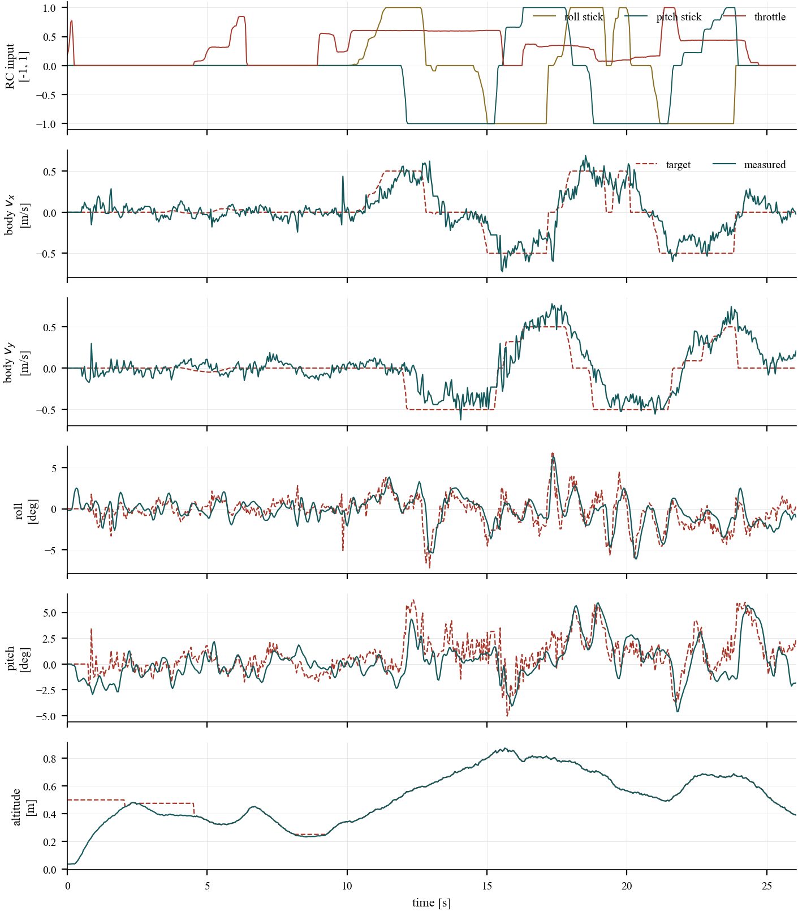
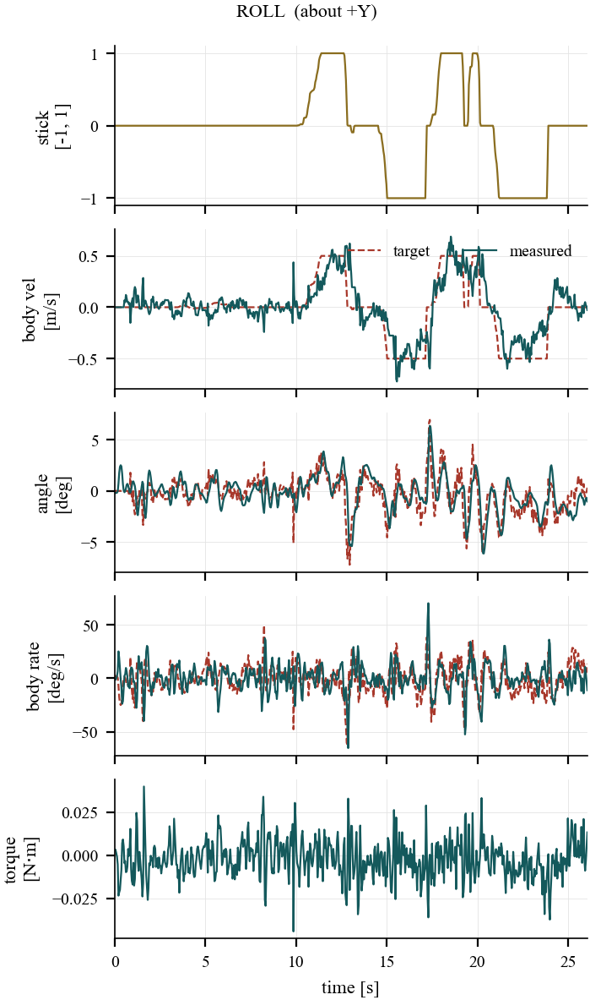
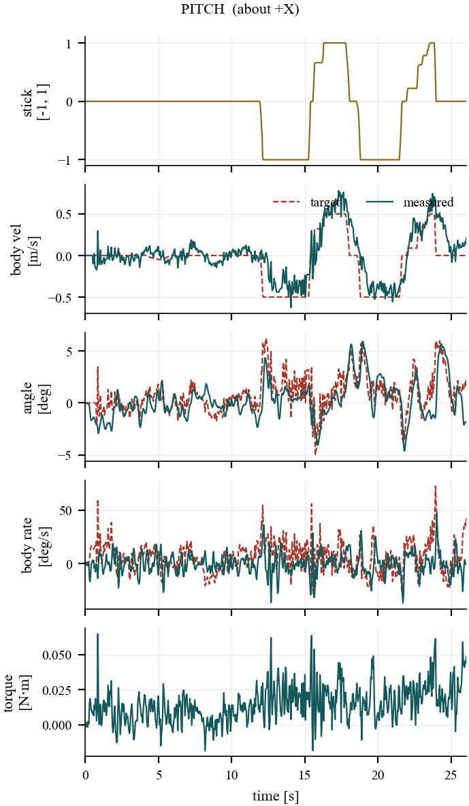
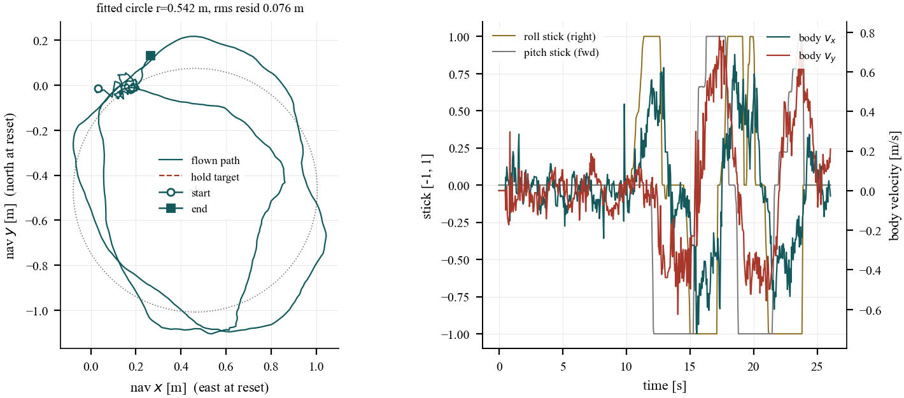
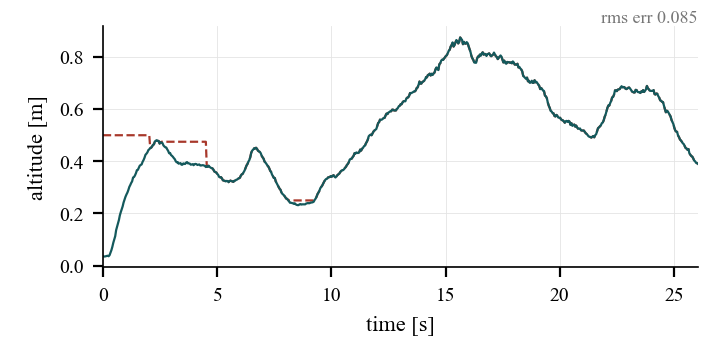

Flight Controls · Embedded Systems · State Estimation
Quadrotor Flight Controller
A 232 mm quadrotor built from scratch over a summer, with a flight controller written from the frame conventions up — and a sign-convention bug hunt that explains why it flies now.
The aircraft
Built, flown, and instrumented.


Hardware
What is on the airframe, and how it fits together.
The stack is deliberately layered. Power enters at the bottom, computation sits in the middle, and the battery rides on top where its mass stays near the centre of the frame — which keeps the inertia the controller models close to the inertia it actually has.
- Power. A 1300 mAh 4S LiPo feeds the frame through an XT60 lead into the distribution layer, which fans out to the four electronic speed controllers.
- Propulsion. Four brushless motors on 5-inch tri-blade propellers, two spinning clockwise and two counter-clockwise so their reaction torques cancel in level flight. Each ESC talks bidirectional DShot, so the same wire that carries the command carries measured RPM back.
- Sensing. An IMU supplies angular rate and specific force; a magnetometer anchors heading; a downward optical-flow sensor measures translation over the ground; a time-of-flight rangefinder supplies height. No single one of those is sufficient, which is why they are fused rather than used directly.
- Compute and link. The flight controller runs the estimator and the full control cascade, and talks to the hand-built transmitter over a low-latency ESP-NOW link that also carries telemetry back to a laptop for logging.
The integration point that matters most is the RPM feedback. Because the ESCs report actual rotor speed, the controller can treat each rotor as a closed-loop actuator with a known output rather than an open-loop throttle whose real behaviour depends on battery sag, propeller loading, and temperature.
Architecture
Control on rotor angular velocity.
Rather than commanding motor throttle directly, the controller resolves everything down to a per-rotor angular velocity setpoint, then closes a speed loop on real RPM fed back over bidirectional DShot.
position → velocity → acceleration → tilt tilt → body rate → angular acceleration → torque (thrust, torque) → RotorAllocator → per-rotor ω setpoint ω setpoint → RotorSpeedLoop (closed on RPM) → DShot
Why rotor angular velocity, and not throttle
A conventional flight controller ends its cascade at a throttle value per motor — a duty cycle handed to an ESC in the hope that it produces the intended thrust. That hope is the problem. Thrust from a propeller goes roughly as the square of its angular velocity, and the mapping from throttle to angular velocity is not fixed: it sags as the battery drains, shifts with air density, and changes as the propeller loads up in fast descent. A controller tuned at full charge is a differently tuned controller at half charge.
Commanding angular velocity instead removes that uncertainty. The allocator converts the desired thrust and three-axis torque into four rotor speed setpoints using the airframe's geometry, and each rotor then runs its own closed loop against the RPM the ESC reports back over bidirectional DShot. Battery sag becomes a disturbance the inner loop rejects rather than a gain error the outer loops never learn about.
The practical payoff is that every quantity above the allocator stays in physical units. The attitude loop asks for a torque in newton-metres, the position loop asks for a thrust in newtons, and the allocator is the single place where physics turns into actuator commands. When yaw authority was wrong, that separation is what made the fault findable: the torque request was correct and the mapping beneath it was not.
Conventions live in one file
A single header defines the body frame — +X right, +Y forward, +Z up — declares every rotation right-handed, and derives the IMU transform from that. Anything downstream that needs a sign asks the header rather than deciding for itself.
The mixer is derived, not written down
The allocation matrix is built at run time from rotor positions and spin directions by summing r × F, so a sign error in the mixer would have to be a geometry error first.
Drag torque identified in flight
The propeller drag-torque coefficient was never characterised for this airframe, so the controller identifies it live using normalised LMS, gated behind a commissioning flag plus checks on RPM freshness, excitation, allocator saturation, and attitude. It is hard-clamped to a physical band, so a bad estimate degrades to slightly-off yaw authority rather than a sign flip.
Debugging
One wrong sign, five different symptoms.
Roll and pitch flew well. Yaw and horizontal position did not. The cause was a single variable holding a counter-clockwise-positive rate while its name said clockwise — the IMU is mounted upside down, and a gyro sign correction had quietly inverted it.
Four separate consumers each assumed clockwise and each broke differently: the yaw mixer turned into positive feedback and saturated, the magnetic-heading function returned the negative of the right-handed yaw it advertised and fed that to the state estimator, the two body/navigation frame transforms were written as each other's transpose — invisible at heading zero, fully cross-coupled at 90° — and the optical-flow lever-arm term injected fake translation that reinforced the error during rotation.
A fifth problem was found last and mattered most for the symptom: on the transmitter, the yaw command was a compile-time constant zero, read from no pin at all. The receiver was handed 0.0 on every packet. That alone would have prevented yaw control even with the other four fixed.
An earlier diagnosis had correctly identified gating, signal-quality, and gain problems and fixed them. It never found the sign layer — and no gain change could have.
Flight data
Telemetry from a hover run.
Logged live over the air at roughly 50 Hz. Two arm cycles appear in this run.
Remote control
Flown by hand from the transmitter.
A single 26-second flight, flown free-hand on the sticks. No waypoint list, no autonomous mode — the transmitter stick positions are logged on the same clock as the estimator and the controller, so every command can be traced through the cascade to what the aircraft actually did. In this run only heading is held to a setpoint; altitude and horizontal position are the pilot's, which is why position and heading tracking error are not meaningful numbers here.

A stick deflection is a velocity request, not a tilt
The sticks never command an angle. Roll and pitch map to a body-frame velocity setpoint of up to roughly ±0.5 m/s at full deflection, and the velocity loop decides what tilt is needed to produce it. Tilt is the means, not the command — which is why the velocity traces are smooth while the angle traces underneath them are busy. The attitude loop is continuously chasing whatever tilt the current velocity error demands.
Because the body frame is +X right, +Y forward, +Z up, the two channels split cleanly: the roll stick rolls the aircraft about its forward axis and moves it along ±X, right and left; the pitch stick pitches it about its right-hand axis and moves it along ±Y, forward and back.


The circle is hand-flown, not planned
There is no circular trajectory anywhere in the firmware. The loop in the ground track is what comes out of driving the two sticks in quadrature by hand — roll right while easing pitch forward, then pitch back as the roll comes off. A circle fitted to the flown path lands at 0.542 m radius with 0.076 m rms residual, which measures how steady the pilot was rather than how well a controller tracked anything.
The panel on the right is the part that says the vehicle works. Every stick step produces a body-velocity response of the right sign and roughly the right magnitude, on both axes simultaneously, and the two axes stay decoupled while the aircraft is rotating through the turn.

Altitude converges on what the rangefinder measures
The first four seconds are a real hold command: 0.5 m, commanded from the ground, and the aircraft climbs onto it and settles. After that the throttle stick is in the pilot's hand and the dashed commanded trace vanishes underneath the solid measured one — with throttle active the setpoint is continuously re-anchored to the estimated height, so letting go of the stick leaves the aircraft holding whatever altitude it had reached. Commanded and measured differ by 0.085 m rms across the whole run, and nearly all of that is the opening climb.

In flight
What that looks like from outside.
A short clip of the aircraft flying on the stabilisation described above. A longer walkthrough of the transmitter and the flight controller is in progress; this one is just the vehicle doing its job.
All four axes are live on the sticks. Throttle takes it up and down, pitch drops or raises the nose and translates it forward and back, roll banks it and translates it sideways, and yaw rotates it about the vertical without moving it across the ground. None of those are direct commands to the motors — each one is a request that ends up as four rotor speed setpoints closed on measured RPM.
The part worth watching is what happens when the sticks come back to centre. The aircraft stops and stays. Nothing outside the airframe is telling it where it is: the downward optical-flow sensor measures how the ground slides underneath it, the time-of-flight rangefinder measures how far below that ground is, and the estimator fuses both with the IMU into a position and a height it can hold against. Capturing a spot and sitting on it is that fusion working, not the pilot trimming.